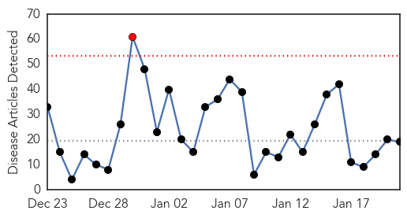
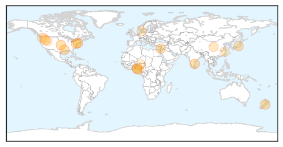
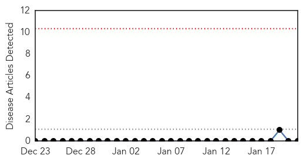
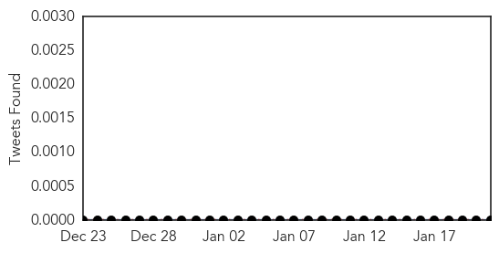

Influenza
30-Day Web Trend
1 alerts, 0 warnings

30-Day Twitter Trend
1 alerts, 0 warnings
Article Locations
Article Confidences
Top Articles:
- 0.994
- Flu Vaccine Barely This Year, CDC Says
- 0.994
- The Flu Is Back
- 0.990
- A whole lot of misery: Flu season in full swing in N.J.
- 0.983
- Swine flu: surveillance stepped up
- 0.940
- Mutations delay influenza vaccine
- 0.928
- High-path Bird Flu Hits Turkeys in Israel
- 0.919
- Seven States Now Have Bird Flu
- 0.901
- Mandatory Flu Shot For Health Care Workers, Patient Protection Or Politics?
- 0.843
- Nowcasting: Disease monitoring at Internet speed -- GCN
- 0.801
- Avian flu found in backyard flock in Idaho
- 0.771
- Bird Flu hits Rivers, farm quarantined
- 0.702
- Third avian flu outbreak in Washington state
- 0.664
- Rivers Govt Confirms Outbreak Of Bird Flu
- 0.652
- East China province reports 14 H7N9 cases this winter - Headlines, features, photo and videos from ecns.cn
- 0.640
- COMPARE project aims to speed up global response to infectious disease outbreaks
- 0.616
- Avian flu virus confirmed in Idaho
- 0.598
- Bird Flu Hits Rivers …RSG Confirms Outbreak In PH
- 0.542
- Avian flu quarantine placed in 6-mile area east of Port Angeles -- Port Angeles Port Townsend Sequim Forks Jefferson County Clallam County Olympic Peninsula Daily NEWS
- 0.527
- Third Avian Flu Outbreak in Washington State Poultry
Top Tweets:
-
No tweets found for Jan 21, 2015
Bubonic Plague
30-Day Web Trend
0 alerts, 0 warnings

30-Day Twitter Trend
0 alerts, 0 warnings

Article Locations

Article Confidences

Top Articles:
-
No articles found for Jan 21, 2015
Top Tweets:
-
No tweets found for Jan 21, 2015